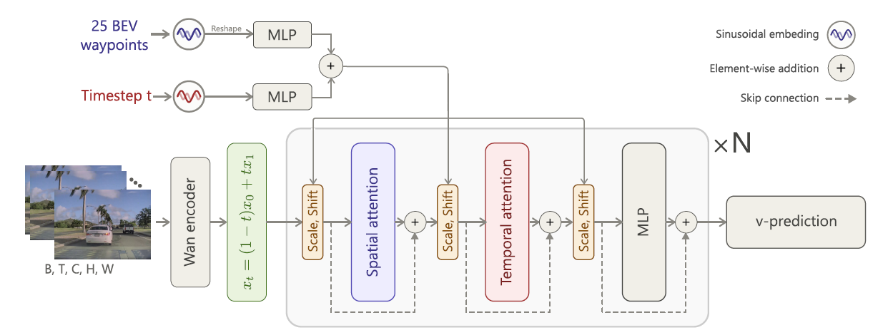
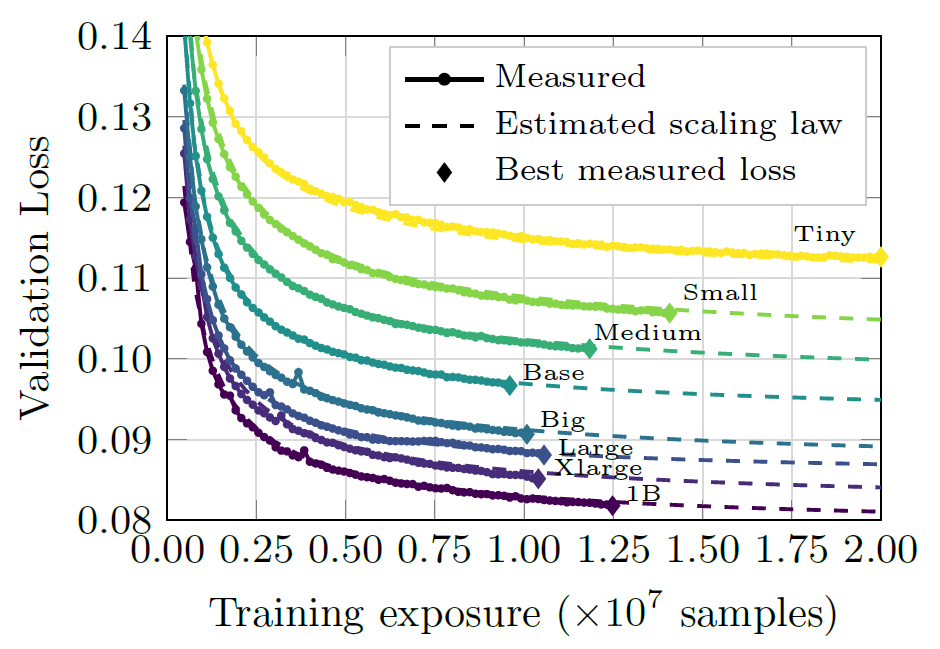
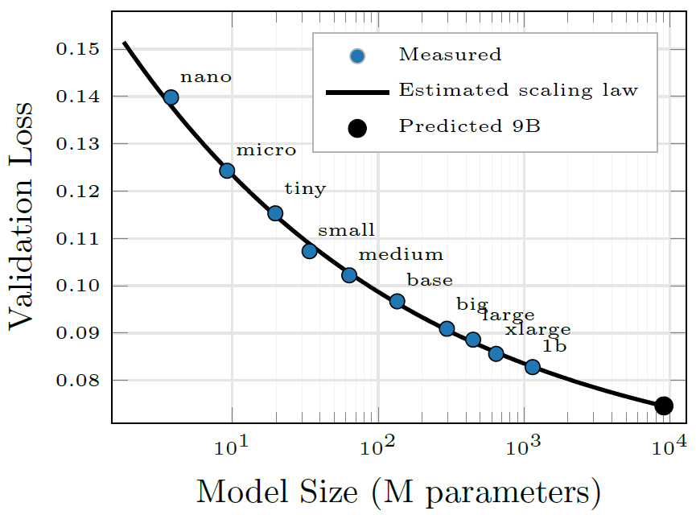
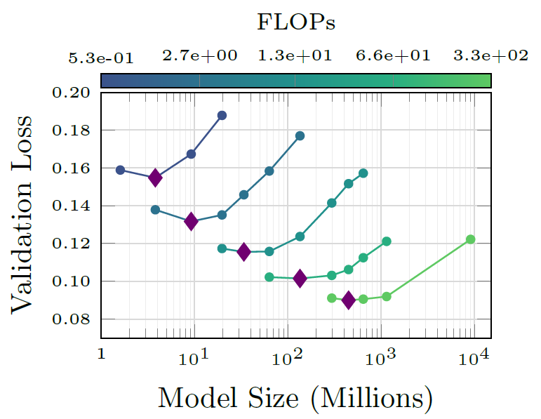

5,500 h
Driving video
valeo.ai research project
A Scaling Law Analysis of Video Diffusion Models
valeo.ai - Paris, France
Driving video
Countries
Training runs
Parameters used to fit laws
Extrapolation error
Video generation for autonomous driving cannot simply follow web-scale recipes similar to LLMs. Driving data is expensive to collect, privacy constrained, and limited in unique coverage. Moreover, diffusion models are different in terms of training dynamics and scaling behavior compared to LLMs. Thus we ask: given a fixed driving dataset, how should we allocate compute to improve video generation?
VATIX uses scaling laws to answer where each next unit of compute should go.
Paper setup: allocate model scale and exposure under a compute budget.
Target metric: \(L_{val}\) (validation diffusion loss)
How validation loss changes as parameter count increases.
How validation loss changes as total seen samples increase.
How to allocate model size and exposure under fixed compute.
\[L(x)=L_0 + A x^{-\alpha}\]
\(x\): scaling variable | \(L_0\): asymptotic loss | \(A\): initial gap | \(\alpha\): scaling rate
Preprocessing setup used in VATIX experiments
A conditional flow matching learns a continuous transport from noise to video by integrating a learned velocity field.

SCALING LAWS
Validation loss follows consistent power laws in both training exposure and model size. Under limited compute, increasing exposure is the fastest path to lower loss, while larger models remain essential to push the asymptotic floor lower at scale.
Training exposure follows a stable power-law regime and yields the fastest loss reduction for a fixed model. Early gains are strong, then progressively diminish as exposure grows.

Model size also follows a consistent power law, but improves loss more slowly than exposure. Its key benefit is a lower asymptotic loss \(L_0\), which smaller models cannot match.
This makes model scaling essential when the goal is to reach increasingly low loss.

Compute-optimal scaling balances both axes: prioritize longer training when compute is tight, then increasingly invest in model size as compute and training budgets grow.
The optimal allocation shifts toward larger models as the total compute budget increases, following a predictable scaling law.

THE TAKEAWAY
0.0753
Predicted 9B validation loss
0.0781
Observed 9B validation loss
3.6% relative error
Extrapolation spans 8x beyond the largest model used for fitting.
Side-by-side synchronized comparison across scales: 19M, 135M, 1.1B, 9B.
Each scene video is split into four synchronized panes from left to right: 19M, 135M, 1.1B, 9B.
The scaling trends observed in validation loss translate into improved video quality, with larger models consistently outperforming smaller ones across all metrics.
| Model | FID-Inception | FID-DINO | FVD-I3D | FVD-VideoMAE |
|---|---|---|---|---|
| Tiny | 26.87 | 280.19 | 175.99 | 198.40 |
| Base | 10.66 | 132.51 | 68.43 | 116.94 |
| Large | 8.67 | 117.76 | 48.09 | 99.43 |
| 1B | 5.61 | 87.05 | 33.94 | 89.49 |
| 9B | 4.91 | 60.81 | 37.16 | 75.86 |
On nuScenes (Vista split), VATIX 9B improves the listed metrics over the compared baselines.
| Method | FID-Inception ↓ | FID-DINO ↓ | FVD-I3D ↓ | FVD-VideoMAE ↓ |
|---|---|---|---|---|
| Vista [7] | 6.9 | — | 89.4 | — |
| GEM [9] | 10.5 | — | 158.5 | — |
| VATIX 9B (ours) | 2.72 | 87.12 | 25.50 | 32.58 |
— indicates the metric was not reported for that baseline in the referenced results.
KEY TAKEAWAYS
Video diffusion scaling is predictable in both dimensions, but the gains are asymmetric: exposure improves loss faster, while model scale determines how low the final loss can go.
01
Validation loss decreases with a stable exposure power law (\(\alpha_D = 0.74\)). Under limited compute, longer training is the most effective lever for improving a fixed model.
02
Model scaling is slower (\(\alpha_N = 0.21\)), but larger models consistently reach lower asymptotic losses \(L_0\). Scale is thus required for the best long-run loss frontier.
03
As compute increase, the optimal strategy shifts from mostly longer training toward scaling both training exposure and model size under a predictable compute law.
0.74
Training exposure
\(\alpha_D\)
0.21
Model size
\(\alpha_N\)
0.154
Compute scaling
\(\alpha_C\)
3.6%
9B extrapolation
relative error
If you use VATIX in your research, please cite:
@inproceedings{
besnier2026how,
title={How Far Can 5,500 Hours of Driving Take You? A Scaling Law Analysis of Video Diffusion Models},
author={Victor Besnier and Anh-Quan Cao and Elias Ramzi and Spyros Gidaris and Tuan-Hung VU and Andrei Bursuc and Eloi Zablocki and Matthieu Cord},
booktitle={[Archival Track] ECCV 2026 DriveX - 6th Workshop on Foundation Models for Autonomous Driving},
year={2026},
url={https://openreview.net/forum?id=V33on0TguP}
}